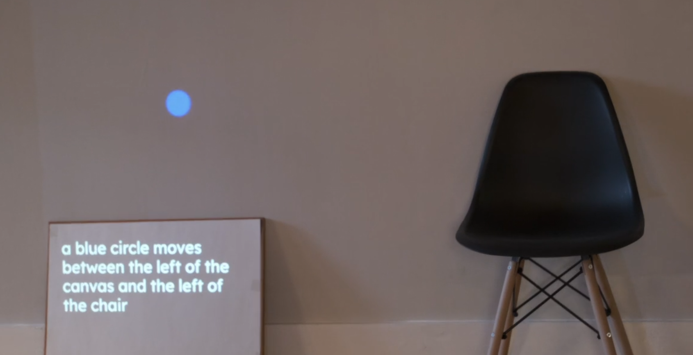

I would like to express my deepest gratitude to my principal investigators, Dr. Clément Duhart, Dr. Xiao Xiao, and Dr. Marc Teyssier. A special thanks to Dr. Duhart for founding the DeVinci Innovation Center, where I had the privilege to study, and for guiding me as my PI. I am equally grateful to Dr. Xiao and Dr. Teyssier for stepping in and continuing to provide invaluable support and mentorship.
To my peers, Claudio Ortega and Matthieu Segui, with whom I navigated this journey at the DVIC, thank you for your companionship and teamwork. I would also like to extend my heartfelt thanks to my teachers, Dr. Gregor Jouet and Dr. Yliess Hati, for their guidance and wisdom throughout my studies.
I am especially thankful to the earlier generations of DVIC alumni, including Vincent Thevenin, Teddy Leclercq, Thomas Raynal, and Thomas Juldo, who have shared their knowledge and helped me grow. Your impact on my learning has been profound.
Lastly, I am forever grateful to my parents for their unwavering support and encouragement throughout this journey. Without them, none of this would have been possible.
In 2007, the launch of the iPhone revolutionized Human-Computer Interaction (HCI) by placing a powerful, multifunctional device directly in users’ pockets, transforming everyday interactions with technology. A cornerstone of this transformation was the iPhone’s virtual keyboard, which employed predictive text algorithms to enable fast and effective typing on a small screen. This innovation not only redefined how users interacted with mobile devices but also marked an early, impactful integration of algorithmic intelligence into consumer technology, enabling seamless usability in compact form factors.
Since then, Artificial Intelligence (AI) has advanced significantly, driven by deep learning breakthroughs and more affordable computational resources. Today, Human-Computer Interaction is no longer bound to small screens; it has extended into the physical world through augmented reality (AR). This shift from static screens to immersive, real-world interactions redefines how we engage with technology, supporting users’ cognitive processes by making technology an extension of their thoughts.
Modern AI-driven tools like AR create seamless connections between virtual and physical spaces, challenging traditional models of interaction. These interfaces demand a fresh understanding of how intelligent environments can support and expand users’ cognitive capacities.
This thesis investigates the new affordances introduced by AI-driven AR applications within HCI, focusing on how these interfaces extend users’ cognitive capacities in creative and complex tasks Unlike traditional screen-based interaction models, AI-enabled AR applications integrate virtual and physical spaces, creating low-signaling, high-possibility interfaces where minimal user input leads to expansive, context-rich outcomes.
Grounded in the extended mind theory (Andy and David 1998) , which posits that tools and spaces are integral to human thought processes, this research explores how AI-driven AR can act as an extension of users’ cognition. By embedding AI assistance directly into the physical environment, these interfaces reduce the cognitive load typically required in complex interactions, allowing users to focus more on creative and strategic aspects of their tasks. This approach moves beyond simple usability, positioning AR as a cognitive tool that enhances users’ abilities to think, create, and collaborate in ways traditional HCI methods cannot.
A key focus of this thesis is on designing AR experiences that operate independently of specialized hardware, like headsets or smart glasses. Instead, it emphasizes the creation of applications that extend beyond the screen. This inclusive approach allows for shared, immersive experiences that are accessible to a wider audience, including those who may not interact directly with the interface but are nonetheless part of the environment.
Through this lens, AI-driven AR transforms not only individual interactions but also the landscape of collaborative engagement. These tools facilitate a model of interaction where technology is a flexible, intelligent extension of the user’s mind rather than a separate entity. This thesis seeks to provide a comprehensive understanding of these affordances, their practical applications, and their impact on the future of HCI, demonstrating how AI-driven AR can redefine the boundaries of digital and physical interaction.
Current Human-Computer Interfaces lack the adaptability and cognitive support needed for seamless, collaborative engagement with AI. Traditional AR systems often require specialized hardware and extensive user input, which can limit accessibility, increase cognitive load, and constrain creativity. These limitations restrict AR’s potential to act as an intuitive extension of users’ cognitive processes, inhibiting its effectiveness in complex, dynamic tasks.
This thesis addresses the need for AI-driven AR interfaces that function as flexible cognitive extensions, allowing users to accomplish complex tasks with minimal, intuitive input. By focusing on low-signaling, high-possibility affordances, this research envisions AR as a tool that enhances cognitive and creative capacities, fostering responsive, inclusive, and contextually adaptive AI-augmented environments that expand traditional boundaries of interaction in HCI.
To deepen our understanding of AI-enabled affordances in augmented reality, this research investigates the following questions:
What challenges are associated with designing for low-signaling, high-possibility affordances?
How can users benefit from AR to effectively collaborate with an AI system?
How do AI-driven affordances differ from traditional affordances?
In response to the above questions, this research sets forth the following objectives:
To design systems that enable users to collaborate with AI to accomplish complex creative tasks.
To explore how AI can enhance cognitive and creative capabilities.
To develop real-time, dynamic AI-enabled AR applications.
The two projects at the core of this research are the AI-Totem and the LLM Whiteboard. Each project explores facets of AI-enabled affordances in augmented reality. These projects illustrate how AI and AR can combine to create dynamic, collaborative experiences that embody low-signaling, high-possibility interfaces.
The Totem platform investigates the integration of AI with AR in digital art creation. Using SDXL Turbo, a state-of-the-art diffusion model, the platform augments user sketches into intricate portraits, while the First Order Motion model animates these creations, allowing users to manipulate digital art with movements in real time. This project embodies the thesis’s objective to empower creative capabilities through intuitive and expressive HCI interactions. The Totem enables users to explore digital art beyond the traditional screen, as their physical movements directly influence the generated images. The result is a seamless, dynamic, embodied creative process that exemplifies how AI-driven affordances enable users to accomplish more with fewer actions.
The LLM Whiteboard project facilitates user collaboration with a large language model in a live programming environment. Designed to expand the understanding of physical computing concepts through AR, this project allows users to interact with a spatially aware LLM. Using camera feeds to capture the physical environment, models interpret data while the LLM generates code based on high-level user commands. The Whiteboard environment functions either as a blank canvas or as an overlay on a live camera feed, which enables users to experiment with physical computing concepts in a virtual space. This project aligns with the research objective of exploring collaborative AI applications, demonstrating how AI-driven affordances can enable creative coding processes with minimal signaling and high interpretive potential.
The Totem platform demonstrates how blending AI with AR can expand creative agency, allowing users to interact with digital art intuitively and dynamically. This experience illustrates AI’s potential to redefine affordances within HCI, empowering users to accomplish complex creative tasks through minimal, natural gestures. Totem exemplifies how AI-driven AR can translate physical movements into digital influence, making it a compelling model for embedding physical interactions within real-time generative art, a capability that has broad implications for digital art, entertainment, and interactive media education.
Similarly, the LLM Whiteboard showcases the power of collaborative coding and physical computing in an AR environment. By leveraging AI’s ability to interpret spatial data and generate code based on user commands, the Whiteboard creates a setting where digital elements seamlessly extend into the user’s physical space. This approach provides a versatile tool for multi-modal tasks that would otherwise require specialized training or complex setup, underscoring its potential applications in educational technology, rapid prototyping, and digital fabrication.
Together, the Totem and the LLM Whiteboard highlight the transformative potential of AI-driven AR to extend cognitive capabilities and facilitate productive engagement across varied applications. They suggest a future in which AR platforms transcend traditional screen-based interaction, instead creating environments that integrate naturally with users’ physical contexts. As models of high-possibility, low-signaling interfaces, these projects demonstrate the potential of AI-driven AR to empower users to think, create, and collaborate with AI as intuitive extensions of their own thought processes, setting an example for more immersive, flexible, and human-centered interaction paradigms.
In Human-Computer Interaction, the term "affordance" is essential for understanding how users engage with interfaces, serving as a bridge between User Interface (UI) design and User Experience (UX). Affordances refer to the properties or characteristics of an object (or digital element) that suggest its possible uses, guiding users toward intended actions within an interface.
The concept originated with Gibson (1977) (Gibson 1977) , who introduced affordances in the context of ecological psychology. For Gibson, affordances are action possibilities inherent in an environment that exist regardless of whether an actor perceives them. For example, a chair affords sitting regardless of whether someone realizes it or uses it for that purpose. This perspective highlights that affordances are rooted in the functional capabilities of an environment or object.
Building upon Gibson’s foundational work, Norman (1988) (Norman 1988) adapted the concept to HCI, emphasizing how affordances in interfaces provide cues about possible interactions. Norman expanded the idea to focus on perceived affordances, explaining that objects or interface elements should offer visual hints that communicate how they can be used. For instance, a button’s design may indicate that it is clickable, through shading, placement, or other visual markers, signaling users toward the appropriate interaction without explicit instructions. Norman’s interpretation underscores the role of perception in usability: an affordance is effective in HCI when it is both present and easily recognizable.
This refinement of affordances into perceived cues is integral to user experience design, as it shapes how easily and intuitively users navigate an interface. Clear affordances reduce cognitive load, allowing users to engage with minimal friction, leading to a seamless, satisfying UX. By leveraging users’ existing mental models, affordances can guide interactions effectively. For instance, a trash can icon is widely recognized as affording deletion—a shared metaphor that aids usability.
[fig:affordances]
Affordances in HCI enhance both functionality and understandability, forming a bridge between the UI elements users interact with and the UX that shapes their experience. The more intuitive and apparent these affordances, the more effortlessly users can navigate and feel in control of the interface, optimizing overall interaction.
In the previous section, we explored the concept of affordances as a fundamental link between User Interface (UI) and User Experience (UX). Affordances guide users through an interface by providing signals about the possibilities an action can unlock (McGrenere and Ho 2000) (Przepiorka and Horne 2018) . When these affordances are clear, users can intuitively understand what actions are possible. However, as digital interfaces evolve, particularly in the realms of augmented reality (AR) and artificial intelligence (AI), we encounter new types of interfaces where affordances are less explicit. These low-signaling, high-possibility systems challenge traditional UI and UX paradigms, introducing new complexities in how users navigate and interact with the possibilities afforded by these systems.
Low-signaling, high-possibility interfaces are designed with minimal explicit cues, offering limited guidance on potential interactions while enabling a broad scope of possible outcomes. These interfaces challenge traditional human-computer interaction frameworks, as they minimize explicit affordances, making it difficult for users to grasp the system’s full functionality. This limited signaling can create a perceptual gap, wherein the extensive potential of the interface may not align with the user’s ability to easily interpret or interact with it, creating friction in usability and discovery processes.
In this context, the affordances competition hypothesis (Cisek and Kalaska 2010) , offers insights into understanding how users navigate such interfaces. According to this hypothesis, interactive behaviors rely on simultaneous processes in which potential actions are specified and selected in real-time rather than in serial stages. This framework contrasts with traditional cognitive models, suggesting that users may not process low-signaling interfaces through linear steps but instead perceive and select actions dynamically, aligning more closely with real-time interactive systems that emphasize immediacy and fluidity in human-computer interactions. Thus, low-signaling interfaces may require users to engage in this kind of affordance competition, evaluating and selecting options in parallel rather than relying on pre-defined instructions.
Moreover, research on HCI design principles underscores the importance of aligning system functionality with users’ mental models to enhance overall usability and satisfaction (R et al. 2023) . Interactive systems that complement human cognitive processes and intuitively support the user’s decision-making foster a more accessible and fulfilling experience. In low-signaling interfaces, however, this alignment becomes challenging due to the minimal cues provided, emphasizing the need for adaptive and responsive design elements that aid users in discovering the high-possibility actions available. Consequently, achieving a balanced design in these interfaces requires understanding human cognition and designing responsive elements that can subtly guide user interaction without overwhelming or reducing the interface’s inherent flexibility.
To effectively design for both usability and richness in interaction, it’s important to understand the balance between signaling levels and possibility levels:
High Signaling, Low Possibility: These interfaces are straightforward and easy to use, offering clear affordances for a limited range of actions. For instance, a simple media player might feature a play/pause button, volume controls, and a slider for adjusting the timeline—each with an obvious function.
Low Signaling, High Possibility: These interfaces, by contrast, are complex, offering numerous interaction possibilities, but with minimal guidance or affordances. Voice command systems or gesture-based interfaces often fall into this category, where the user must experiment or learn to discover the breadth of possible interactions.
In many cases, increasing signaling—through visual or other sensory affordances—enhances the user’s ability to explore the full potential of a system. However, increasing signaling can clutter the user’s experience and overwhelm the interface, limiting the immersion and fluidity.
Augmented Reality (AR) exemplifies the unique challenges of designing low-signaling, high-possibility interfaces (Fragoso, Rebs, and Barth 2012) . In AR, users can interact with digital elements seamlessly integrated into their physical surroundings, creating opportunities to blend the virtual and real. However, signaling these interactions can be difficult, as too many visual cues may diminish the immersive experience, disrupting the cohesion between digital overlays and physical space.
An AR interface may offer rich interaction possibilities, such as manipulating virtual objects, triggering animations, or accessing information through gestures, voice commands, or interactions with physical items. However, without intuitive affordances—like context-aware hints, subtle animations, or gestures that intuitively link to real-world actions—users may struggle to understand the interface’s potential. The vast range of interactions that AR enables is thus limited by how effectively these options are communicated.
Furthermore, AR introduces a unique third-person challenge: a person without AR gear cannot readily interpret the interactions between AR users and digital elements, leading to an exclusionary effect in shared physical spaces. This highlights the need for AR interfaces to create inclusivity by making interactions more accessible and understandable even to those without AR devices. Integrating AR elements into the physical environment through clear, minimalistic cues—such as small indicators or interactive physical anchors—can help bridge this gap, allowing both AR-equipped and non-equipped participants to follow the interaction flow.
To achieve intuitiveness and fluidity, AR interfaces should minimize the learning curve and reduce the need for elaborate tutorials. The goal is to make interactions so intuitive that users can understand and engage with AR environments effortlessly, enhancing both user experience and accessibility. Ultimately, the goal of AR interfaces should be to achieve intuitiveness and fluidity, reducing the need for a steep learning curve or extensive tutorials. Effective AR affordances should allow users to explore and engage with the environment naturally, discovering interactions as they would in the physical world. By prioritizing intuitive, fluid interactions, AR interfaces can empower users to fully leverage the technology’s potential with minimal guidance, enhancing both usability and user experience.
Artificial Intelligence serves as a crucial enabler for low-signaling, high-possibility interfaces (Neches et al. 1986) . By interpreting user intent and providing contextual cues, AI enhances intuitive interaction in environments where explicit visual affordances are limited (Beltrão, Paramonova, and Sousa 2022) . Through real-time analysis of user behavior and context, AI-driven systems can offer subtle, adaptive guidance, creating an experience that feels natural and minimally intrusive.
For instance, in low-signaling interfaces such as voice assistants, AI interprets natural language inputs, eliminating the need for traditional visual cues. This approach simplifies interactions, allowing users to engage seamlessly without explicit prompts. Similarly, in Augmented Reality environments, AI can track a user’s gaze, gestures, or position in real-time, delivering just-in-time affordances that guide the user without disrupting immersion. By responding dynamically to user actions, AI transforms the interface into a fluid, context-sensitive experience, enabling users to explore the system’s capabilities without facing a steep learning curve or being overwhelmed by signals.
AI also addresses the "high-possibility" aspect of these interfaces by unlocking functionalities that would otherwise be inaccessible. Generative AI, for example, facilitates complex tasks like on-the-fly image creation, code generation, or data synthesis, all of which expand the potential actions available within an interface. In creative tools, this enables users to generate images, design interactive elements, or even produce code using simple, high-level commands. Through capabilities like generative AI, systems gain a wide range of possible interactions without requiring a corresponding increase in explicit controls, allowing users to accomplish complex tasks with minimal input.
The convergence of Artificial Intelligence and Augmented Reality creates a powerful synergy that addresses the inherent challenges of low-signaling, high-possibility interfaces in AR environments. While AR offers a high degree of interaction potential by blending digital elements with physical surroundings, it is often limited by the difficulty of signaling these possibilities in an intuitive, immersive manner. AI, on the other hand, enables adaptive affordances, capable of interpreting user intent and dynamically generating cues, effectively bridging this gap.
In AR, the complexity of potential interactions—such as manipulating virtual objects, accessing hidden layers of information, or collaborating with others—is constrained by the system’s ability to guide users effectively without overwhelming visual indicators. Here, AI proves invaluable. By analyzing gestures, gaze, and contextual factors in real time, AI can offer subtle prompts, adjust visual affordances, or predict actions, thus empowering users to explore and interact with AR content fluidly. For example, if a user’s gaze lingers on a virtual object, AI could provide a discreet visual cue, indicating that the object is interactive, without detracting from the overall immersive experience.
Moreover, AI’s generative capabilities elevate AR to a new level of high-possibility interaction. Generative AI models can dynamically create content such as images, textures, or even functional code within the AR environment, broadening the scope of what users can accomplish. This expands AR from a static interface to an evolving, interactive canvas where users are limited only by their imagination rather than interface constraints. By enabling such high-possibility functionalities, AI transforms AR from a fixed display of virtual elements to a responsive, co-creative environment.
Together, AI and AR cultivate a low-signaling, high-possibility interface that enhances user experience through intuitiveness and adaptability. AI alleviates the signaling limitations of AR by dynamically responding to user intent, while AR provides a tangible canvas for AI-driven possibilities, blending digital and physical realms. This symbiotic relationship ultimately fosters an accessible, immersive environment, where users can interact freely and creatively, with minimal guidance and maximal opportunity.
Tracking user movements in AR is challenging due to the need for real-time accuracy, low latency, and efficient processing on mobile devices. These requirements are complicated by factors like variable lighting, fast motions, and limited device resources, all of which demand highly optimized algorithms and adaptive processing to deliver smooth, immersive interactions.
[fig:kptracking]
MediaPipe (Lugaresi et al. 2019) is a powerful framework for enabling high-fidelity body pose estimation on edge devices. This framework uses a pipeline to detect and track human poses in real time, which has expanded the possibilities for AR applications by allowing overlay interactions that are responsive, intuitive, and suitable for everyday mobile devices. MediaPipe’s flexibility allows it to run on mobile devices, desktops, and even in web environments, ensuring accessibility for diverse applications such as fitness tracking, dance, sign language recognition, and full-body gesture control.
[fig:mediapipe]
In AR applications, MediaPipe Pose facilitates the seamless integration of digital content with physical movements. With its ability to infer 33 3D landmarks and a background segmentation mask in real time, MediaPipe provides accurate body pose tracking that supports real-world overlays. This makes it an ideal solution for applications that require responsiveness and precision, such as interactive exercise tutorials, real-time motion-based games, or immersive social experiences through virtual avatars. By delivering such features on lightweight devices, MediaPipe enables more inclusive and accessible AR solutions, broadening AR’s reach into consumer-ready devices like smartphones and AR glasses.
While frameworks like OpenPose (Cao et al. 2017) have demonstrated high accuracy in pose tracking, they often depend on powerful desktop environments for processing. MediaPipe’s edge lies in its ability to deliver real-time pose estimation on mobile and web platforms, specifically optimized to maintain high performance on devices with limited computational resources.
MediaPipe Pose, powered by BlazePose (Bazarevsky 2020) , adopts a two-step detector-tracker ML pipeline. The detector identifies the person or pose’s region of interest (ROI) within the frame, while the tracker predicts pose landmarks and segmentation within this ROI. This approach minimizes computational load by selectively activating the detector only for the first frame or when the tracker loses sight of the pose, ensuring that subsequent frames can rely on the previously identified ROI. This contrasts with frameworks like AlphaPose and Apple Vision, which typically employ continuous processing, potentially consuming more resources and leading to latency issues on mobile devices.

[fig:arFrameworks]
Moreover, MediaPipe’s holistic pipeline allows it to integrate multiple tasks—pose, face, and hand tracking—into one efficient graph, which is a significant differentiator from solutions requiring individual modules for each task. Benchmarks also demonstrate that MediaPipe’s models, like BlazePose GHUM Lite, can achieve 20ms latency on mobile devices, outperforming heavier models such as BlazePose GHUM Heavy and comparable alternatives from Apple Vision. This efficiency not only allows real-time tracking across various AR contexts but also opens new possibilities for developing lightweight, scalable AR applications that can run smoothly even on lower-end devices.
MediaPipe Holistic is a comprehensive framework that differentiates itself from standalone models like BlazePose by integrating pose, face, and hand tracking into a unified system. This holistic approach offers a unique advantage for AR applications requiring real-time, multi-modal tracking across these three key body regions. By tracking multiple modalities within a single framework, MediaPipe Holistic enables immersive and cohesive AR experiences, allowing interactions that rely on the synchronous tracking of head, hands, and body positions—essential for applications like gesture-based controls, sign language recognition, fitness analysis, and interactive AR effects.
To achieve this integration, MediaPipe Holistic relies on distinct models tailored to each tracking component (pose, face, and hands), optimized for high performance and low latency. Each component operates independently but is semantically aligned through a multi-stage pipeline, which leverages the strength of each model while ensuring the output remains consistent across all regions. This pipeline begins by estimating the user’s full-body pose with BlazePose’s pose detector. It then identifies regions of interest for each hand and the face, recropping the full-resolution input frame to improve accuracy before applying task-specific face and hand models. The result is a cohesive set of 543 landmarks: 33 for the body, 468 for the face, and 21 for each hand, creating an accurate, detailed, and continuous tracking solution for AR applications.

[fig:holisticArchitecture]
MediaPipe achieves exceptional performance on edge devices through a series of targeted optimizations, allowing it to deliver accurate, real-time tracking with minimal computational load. These optimizations are critical for enabling MediaPipe to perform smoothly on mobile devices, making it ideal for AR applications that demand low latency and responsiveness.
Graph-Based Pipeline for Efficient Processing: At the core of MediaPipe’s efficiency is its graph-based pipeline, a modular structure where each computational task, such as pose detection or face tracking, functions as an independent node within a directed graph. This setup allows tasks to run only when needed, reducing redundant computations and streamlining data flow through the pipeline. The graph-based design also enables parallel processing by assigning distinct tasks to separate CPU or GPU cores, maximizing hardware utilization. By leveraging this modular approach, MediaPipe efficiently manages real-time data flow, reducing latency and enhancing the responsiveness of AR interactions.
Lightweight and Quantized Model Architecture: To balance accuracy and computational efficiency, MediaPipe’s models are carefully designed to reduce floating-point operations (FLOPs) and minimize parameter count. This lightweight architecture enables MediaPipe to perform complex inference tasks effectively even on resource-limited devices. Further optimization is achieved through quantization, converting 32-bit floating-point weights to 8-bit integers, which substantially reduces memory usage and accelerates processing times without compromising accuracy. This combination of a lightweight design and quantization enables MediaPipe to deliver real-time performance on mobile devices.
Adaptive Inference with Frame Skipping: MediaPipe’s adaptive inference and frame-skipping techniques are essential for managing processing power effectively. By dynamically reducing processing for frames with minimal movement, MediaPipe optimizes resource usage, reducing battery drain while maintaining high responsiveness. In high-motion scenarios, the system seamlessly adjusts by resuming full-frame inference to ensure consistent performance. This flexibility allows MediaPipe to conserve resources during low-demand periods while maintaining the responsiveness needed for interactive AR applications.
Integrated Parallel Processing: MediaPipe takes advantage of the multicore architecture in modern mobile devices, enabling simultaneous processing across pose, hand, and face tracking components. By distributing these tasks across available CPU or GPU cores, MediaPipe achieves real-time, synchronized multi-modal tracking without overloading the device’s resources. This parallel processing capability is particularly valuable in AR applications where coordinated tracking of multiple regions—such as body, face, and hands—enables smooth, uninterrupted user interactions.
MediaPipe stands as a pioneering framework for delivering real-time, high-fidelity tracking across multiple modalities on edge devices, making it an ideal solution for AR applications. Through a combination of modular graph-based architecture, adaptive inference techniques, and carefully optimized model designs, MediaPipe achieves a balance of accuracy and efficiency that enables it to run seamlessly even on resource-constrained devices.
The framework’s flexibility, from lightweight and quantized models to advanced data flow control and parallel processing capabilities, showcases its adaptability across a range of devices—from mobile phones to AR glasses. MediaPipe’s holistic approach, which integrates body, face, and hand tracking within a unified system, opens the door to immersive, interactive experiences that push the boundaries of what’s possible on mobile platforms. This adaptability not only supports a wide range of AR applications, such as fitness tracking, gesture-based controls, and social augmented reality, but also paves the way for future advancements in edge-based computing and user interaction.
Natural Language Processing (NLP) has undergone a remarkable evolution in the field of machine learning, from early techniques like N-grams (Markov 1913) to the advent of modern large language models (LLMs). Each milestone in this progression reflects the increasing complexity of language understanding and the growing sophistication of computational models designed to process human language. Today, LLMs are not just powerful language processors; they have become semantic operators, revolutionizing how we interpret and interact with language. This section explores the evolution of NLP, highlights the rise of LLMs as semantic operators, and explains how these models are reshaping Human-Computer Interaction by enabling interfaces with low affordance through low signaling and high possibility.
In the early stages of NLP, statistical models like N-grams were used to predict the likelihood of word sequences. N-grams operate on the probability of a word occurring based on the preceding N-1 words. For example, a bigram model predicts a word based on the one word before it, while a trigram model uses the two preceding words. Though simple, N-grams were effective in various applications, such as speech recognition and text generation, offering a straightforward way to model language by counting occurrences and calculating probabilities.
One notable application of N-grams was in early predictive text systems, like the original iPhone keyboard (Kocienda 2018) . With its small on-screen keys, the iPhone relied on character-level n-grams to help users type accurately by predicting likely next letters and correcting common typos. By understanding the statistical likelihood of certain letter combinations, the keyboard could infer users’ intended words, even when their finger presses were imprecise. Although limited in scope, these early models significantly improved typing accuracy on a touchscreen, illustrating how statistical NLP techniques laid the foundation for practical applications in HCI.
However, these models had significant limitations, especially regarding broader context in language. N-grams could only account for short-range dependencies, making them prone to errors when handling ambiguity or meaning, as they were purely statistical and lacked a deeper semantic understanding. The reliance on limited context highlighted the need for more advanced methods, eventually leading to NLP models that could better capture the complexities of human language.
The next significant leap in NLP came with the introduction of neural networks and word embeddings, particularly through models like Word2Vec (Rong 2014) and GloVe (Pennington, Socher, and Manning 2014) . Word embeddings transformed how machines interpreted language by mapping words to dense vectors that captured semantic relationships. This allowed words with similar meanings to have similar vector representations, enabling models to understand relationships like "king" is to "queen" as "man" is to "woman."
[fig:embeddings]
These embeddings, while a major step forward, still struggled with polysemy (words having multiple meanings) and couldn’t handle long-range dependencies well. The need for a model that could understand context over entire sentences or paragraphs led to the development of recurrent neural networks (RNNs) (Rumelhart, Hinton, and Williams 1986) and long short-term memory (LSTM) (Hochreiter 1997) networks, which improved the ability to capture sequential dependencies in language.
The breakthrough that brought NLP into the modern era was the development of the Transformer architecture, first introduced in the "Attention is All You Need" paper by Vaswani et al. in 2017 (Vaswani 2017) . Unlike RNNs, Transformers rely entirely on a self-attention mechanism, allowing the model to focus on different parts of a sentence simultaneously, regardless of their position. This enabled better handling of long-range dependencies and opened the door for scaling NLP models to unprecedented levels.

[fig:transformer]
Building on the Transformer architecture, large language models (LLMs) like GPT (Generative Pre-trained Transformer) (Radford 2018) and BERT (Bidirectional Encoder Representations from Transformers) (Devlin 2018) revolutionized NLP. LLMs trained on vast corpora of text have demonstrated the ability to perform tasks such as text generation, translation, summarization, and even answering complex questions. These models don’t just analyze words—they understand context, intent, and meaning on a deep level, making them far more adept at processing human language.
The rise of Large Language Models (LLMs) marks a significant shift in accessibility and democratization of deep learning technologies. Historically, large deep learning models required extensive computational resources and were primarily accessible to those with the expertise to manage complex architectures. However, the introduction of pay-as-you-go APIs like ChatGPT and Claude, alongside open-source platforms like Hugging Face, has drastically lowered the barriers to entry. These services enable developers to access and integrate powerful LLMs without the need for specialized infrastructure or deep expertise. Now, even a simple microcontroller or edge device can leverage web APIs to tap into cutting-edge NLP capabilities, significantly reducing both development and maintenance costs. This democratization has expanded the use of deep learning technologies, making them accessible to a broader audience across industries and enabling more innovation in human-computer interaction.
Modern LLMs have introduced a groundbreaking capability in computing: acting as semantic operators. While traditional computing relies on mathematical and logical operators—mechanisms well-suited to hardware implementation—semantic operators handle meaning and context, areas previously limited to human cognition. With LLMs, machines are now capable of interpreting, processing, and generating nuanced language, taking on a role that involves understanding rather than mere data processing.
The Sparks of AGI paper (Bubeck et al. 2023) highlights that models like GPT-4 exhibit skills close to human-level performance across diverse domains, from mathematics to law, without needing tailored instructions. This capacity is demonstrated through zero-shot prompting (Li 2023) , where the model can perform a task based solely on general context, without examples. For instance, a zero-shot prompt might be as simple as asking, "Summarize this paragraph," after presenting the model with a passage. Despite the lack of detailed instructions, the model generates a concise summary by relying on its inherent understanding of summarization. This zero-shot capability reveals the model’s ability to generalize knowledge across tasks, positioning it as an early form of artificial general intelligence (AGI).
Another powerful technique, few-shot prompting (Brown 2020) , allows LLMs to refine their responses by providing a small set of examples before asking the model to complete a similar task. In the context of Human-Computer Interaction, few-shot prompting can be used to guide the model’s behavior in interpreting high-level commands. For example, the LLM Whiteboard might prompt the model with a few examples like:
“Generate a bouncing ball animation in p5.js." -> associated reference code
“Create a grid of circles that changes color every second." -> associated reference code
“Draw a moving wave pattern." -> associated reference code
After these examples, the model is then asked to generate a new animation, such as “Create a rotating star shape,” with the expectation that it will follow the established style and coding framework. This few-shot prompting technique primes the model to understand the format, purpose, and complexity expected in user commands, thereby improving the consistency and relevance of its responses. By leveraging a small number of examples, few-shot prompting helps the model align closely with user intent and respond with greater accuracy in interactive systems.
Together, zero-shot and few-shot prompting highlight the versatility of LLMs as semantic operators, allowing them to bridge the gap between user intent and machine interpretation in a seamless, adaptable way. By handling ambiguous language, responding contextually, and dynamically adapting to user needs, these prompting methods enable more natural and responsive AI-driven interactions. This capability transforms LLMs from simple data processors into sophisticated collaborators.
In Human-Computer Interaction, semantic operators are transforming how users engage with complex systems. The interpretative capacity of LLMs, allows them to act as "sounding boards", helping users ideate, refine, and evolve their thoughts rather than merely completing tasks (Chen and Chan 2023) . The interaction fosters a collaborative environment where human and AI capabilities complement one another, enhancing the user’s ability to generate nuanced and high-quality outputs.
Recent research highlights both the benefits and challenges of this collaboration, especially in creative contexts. Studies suggest that LLMs, when used as co-creators, can stimulate creative ideation by enabling users to see diverse perspectives and enhance idea evaluation (O’Toole and Horvát 2024) (Shaer et al. 2024) . However, there are potential risks, such as homogenization of ideas across users due to the model’s tendency to favor common or widely accepted answers (Anderson, Shah, and Kreminski 2024) . Effective collaboration with AI, therefore, hinges on the balance between human autonomy and AI assistance, as well as the modality of collaboration, with the "sounding board" approach proving more beneficial than the "ghostwriter" approach, especially for non-experts (Chen and Chan 2023) .
In applications such as augmented reality and AI-driven interfaces, where visual affordances may be constrained by the physical-digital blend, LLMs facilitate intuitive interactions by interpreting natural language and gestures. This allows users to navigate complex interfaces without explicit guidance, bridging the gap between low-signaling affordances and high-possibility interfaces. For instance, an LLM-based AR application can respond to a simple query like "highlight nearby landmarks," inferring the user’s intent and generating context-aware actions without necessitating extensive visual prompts.
The evolution from early N-gram models to sophisticated LLMs has redefined human-computer interaction, not only by enhancing system intelligence but also by enabling collaborative creative processes. The iterative stages in human-AI co-creativity—ideation, illumination, and implementation—showcase how LLMs can expand the user’s creative horizon, with AI acting as an intellectual partner (Wan et al. 2023) .
However, the integration of LLMs in creative contexts raises ethical considerations around user reliance on AI and the potential for bias in generated outputs. These concerns underline the need for responsible design, where LLMs are employed to extend human capabilities without eroding individual agency or creative diversity (Yang 2024) . The journey of NLP from simple word prediction to enabling full-scale, intuitive interaction demonstrates the profound impact of LLMs on HCI, shaping interfaces that are intelligent, context-aware, and more aligned with natural human behavior.
As seen previously, the evolution and convergence of key concepts—affordances, low-signaling, high-possibility interfaces, AI, and AR—within Human-Computer Interaction (HCI). As this field advances, affordances continue to play a crucial role in enabling users to engage intuitively with interfaces, balancing clear cues with opportunities for exploration. However, as systems like AR and AI evolve, traditional affordance models are challenged, necessitating new paradigms that account for high potential actions with minimal explicit guidance.
This shift is particularly evident in low-signaling, high-possibility interfaces, where users are empowered to engage more freely yet may encounter obstacles due to limited cues. Here, AI emerges as a critical enabler, offering adaptive affordances that support dynamic user interactions. Through technologies like MediaPipe and LLMs, AI provides real-time context awareness and guidance, supporting intuitive interaction by responding subtly to user intent and behavior. This synergy enhances immersive technologies such as AR, creating interfaces that feel less like static tools and more like fluid extensions of the user’s environment.
The intersection of AI and AR reveals the potential for high-possibility interaction models, where user commands, gestures, or contextual cues shape experiences without the clutter of excessive signaling. By analyzing user inputs and behaviors, these technologies enable a smooth, intuitive interface that feels increasingly natural and accessible, ultimately facilitating a seamless blend between the physical and digital realms. This exploration of contemporary technologies in HCI underscores the transition from traditional affordances to dynamic, AI-driven interactions, positioning these advancements as foundational for the future of interactive and immersive systems.
These insights illuminate a new era in HCI, where technological progress not only broadens the scope of human-computer interaction but also challenges designers to innovate new affordances that cater to a digitally integrated world. The journey from foundational affordances to adaptive, AI-enabled interfaces exemplifies a shift towards systems that empower users with unprecedented levels of interaction potential, ultimately expanding the possibilities of how we communicate and create within digital spaces.
[fig:spiritofTotem]
The Totem platform is designed to re-imagine digital art by integrating Artificial Intelligence and Augmented Reality into a single, interactive experience. Positioned at the intersection of AI-driven creativity and immersive media, the Totem enables users to transform simple sketches into intricate, animated AR experiences. By combining generative and motion models, the Totem goes beyond static images, offering an intuitive and accessible way for creators to bring digital art to life. This platform not only advances the possibilities for interactive storytelling but also supports the research objective of exploring low-signaling, high-possibility affordances, empowering users to create and engage with minimal input.

[fig:totemImage]
Traditional digital art creation can be time-consuming and often requires substantial technical expertise, particularly for tasks like adding realistic motion or generating intricate visual details. Animation, in particular, has remained a skill-intensive process, limiting accessibility for many potential creators. The Totem addresses these limitations by simplifying the creative process through AI-enabled automation, transforming initial sketches into detailed, lifelike art that responds to user movements. This approach democratizes digital art, making advanced, interactive content creation accessible to a broader audience and reducing the need for specialized skills.
The core technologies behind Totem include SDXL Turbo (Sauer et al. 2023) , First Order Motion (Siarohin et al. 2019) , and the GOSAI framework (Thomas Juldo 2022) . SDXL Turbo, a state-of-the-art diffusion model by Stability AI, interprets users’ sketches and enhances them with rich visual detail, transforming basic inputs into complex, artistically styled images. The First Order Motion model animates these creations, adding realistic movements that elevate static images into dynamic, immersive characters. Together, these AI models enable users to engage with their art in real-time. At the foundation of Totem lies the GOSAI framework. The General Operating System for Augmented Interfaces, developed at the DeVinci Innovation Center streamlines the development of Augmented Interfaces, allowing developers to deploy and scale digital content as an extension of the physical world. With these technologies, the Totem achieves a unique combination of AI and AR, exploring how digital art is created and experienced.
The Totem platform follows a structured workflow designed to transform user sketches into animated, immersive AR experiences. The process flows through two primary apps—Generation and Animation—each responsible for distinct parts of the user interaction. The Generation App enables users to create sketches in AR and stylize them in real time, while the Animation App brings these images to life with dynamic movement. This sequential workflow begins with the Sketch Input & AI Transformation stage, followed by Animation in AR:
Generation App: User sketches are processed by SDXL Turbo on a remote endpoint to create detailed portraits, which are updated in real time as the user draws.
Animation App: Generated portraits are animated with the First Order Motion model, enabling users to manipulate these images interactively in an AR environment.
This high-level division of tasks ensures Totem’s seamless performance by offloading resource-intensive tasks and optimizing real-time responsiveness.
The Totem platform’s architecture leverages the GOSAI, General Operating System for Augmented Interfaces, to manage efficient data flow and resource allocation across its components. At the heart of this architecture, the Redis (Carlson 2013) database plays a crucial role, acting as a shared data cache to store and retrieve information across threads. This enables GOSAI to separate the various system drivers, applications, and compute resources while maintaining fast, synchronized data access. Redis allows drivers responsible for collecting and processing user inputs to interact seamlessly with the Totem’s generation and animation apps, ensuring that data is consistently available without duplication. This architecture enhances the responsiveness of the platform by streamlining data sharing and distributing workloads, allowing the Totem to handle complex interactions smoothly across devices and contributing to the overall efficiency and scalability of Totem’s AR experience.

[fig:diagtotem]
Generation App: This app allows users to create and stylize digital portraits in real time. Users start by drawing a sketch, which, along with a style prompt, is sent to the SDXL Turbo model via a remote endpoint. Since SDXL Turbo is a high-memory model, processing is offloaded to a remote server. The resulting AI-generated images evolve as the user refines the sketch, enabling rapid iteration and exploration within a controlled, visually stable environment. To avoid flickering, the model uses a fixed seed for noise generation, ensuring consistency in the generated output. This approach allows users to experiment freely with image creation, adjusting both content and style until satisfied.
[fig:imgenapp]
Animation App: Once an image is generated, users can animate it using the Animation App. This app loads the created or pre-existing portraits and animates them with the First Order Motion model, which has low computational requirements, making real-time processing feasible directly on the device. Powered by the GOSAI framework, the Animation App interprets user gestures or head movements, linking them to character animations within the AR environment. This component enables fluid interaction, allowing users to manipulate and engage with their digital characters dynamically, bringing a layer of immersion and expressiveness to the experience.

[fig:deepfakeapp]
By separating the tasks between the Generation and Animation apps, the Totem achieves a balanced system architecture that maintains both high-quality image generation and real-time interactivity. The GOSAI framework integrates these components into a unified AR platform, providing users with a seamless experience. This division of compute allows the Totem to handle both remote processing for high-quality imagery and on-device animation, optimizing for performance and interactivity within a resource-efficient design.
The transformation of a user’s sketch in AR, into a photorealistic, AI-generated image within the Totem platform is achieved through SDXL Turbo (Sauer et al. 2023) , an advanced diffusion model optimized for speed and detail. Building on the original SDXL 1.0 architecture, SDXL Turbo enhances input sketches with intricate textures and refined visual elements, turning rough concepts into highly detailed digital art. This model uses Adversarial Diffusion Distillation (ADD), a technique that enables high-quality image generation with minimal computational steps, allowing the Totem to deliver fast, visually rich results.
SDXL Turbo’s efficiency stems from the Image-to-Image Diffusion technique, which progressively refines the sketch with each diffusion step to add depth and realism. A critical feature of this process is the use of a constant seed during image noising, ensuring that the resulting images remain stable and consistent as the user draws, avoiding unwanted flickering between samples. The ADD technique enables the model to produce high-fidelity images in one or two sampling steps, significantly reducing the typical processing time associated with diffusion models. This enables the Totem to generate images in real time, ensuring a seamless creative flow even for complex, photorealistic details.
[fig:sdxlarchitecture]
For creators, SDXL Turbo transforms the Totem into a dynamic tool for rapid experimentation and engagement. The near-instantaneous feedback allows users to see their ideas rendered in detail as they sketch, encouraging iterative design and exploration. With the ability to modify style and content on the fly, users can experiment by turning a simple sketch into various artistic interpretations—such as changing the character from a man in a hat to a dog or a cat in a hat. This adaptability not only enhances the user experience but also promotes creative freedom, making digital art creation accessible and highly interactive.


[fig:sdxlpainting]
The First Order Motion model (Siarohin et al. 2019) brings AI-generated characters to life within the Totem platform by animating images with minimal computational overhead. Unlike traditional deepfake methods (Perov et al. 2020) that rely on Generative Adversarial Networks (GANs) (Goodfellow et al. 2014) , which typically require training on specific source and target faces, the First Order Motion model uses a zero-shot approach to create animations from any input without prior exposure to the source material. The model works by applying motion to keypoints in the image, generating realistic, dynamic expressions and movements that make the characters appear lively and responsive. This efficient method is ideal for the Totem’s AR setting, as it enables interactive animations that naturally mimic the user.
First Order Motion offers significant performance advantages over GAN-based animation techniques. While GANs are resource-intensive, hard to train and often need to be fine-tuned for specific images, the First Order Motion model operates by deforming keypoints and applying motion fields directly to existing images. It extracts sparse motion trajectories from keypoints, transforming these into dense motion fields that animate the image. This lightweight design allows the Totem to animate characters on mobile devices and other resource-constrained hardware, ensuring smooth performance in real-time without requiring a high-end GPU.

[fig:firstorderarchitecture]
The inclusion of animation transforms the Totem experience from static viewing to immersive, interactive creation. By animating AI-generated portraits, users can see their characters express emotions and respond to their movements, adding a new layer of depth to digital art. This dynamic interaction makes the characters feel like a disguise for teh user, enhancing user engagement. The Totem’s approach empowers creators to bring their art to life, enriching storytelling and providing a uniquely immersive experience that adapts to real-world contexts.
To achieve efficient model inference within the Totem platform, various deep learning frameworks were evaluated, including PyTorch, TorchScript, and ONNX. While PyTorch provides flexibility and ease of use during model development, it introduces computational overhead during inference. TorchScript, an extension of PyTorch, offers incremental improvements by converting models into a more static form, but still lacks the aggressive optimizations needed for real-time applications. ONNX (Open Neural Network Exchange) emerged as the optimal choice, allowing models to run with significantly lower latency and memory usage through optimizations like operator fusion and quantization. ONNX’s static graph structure and cross-platform compatibility make it well-suited for performance-critical, resource-constrained applications, leading to a substantial increase in frames per second (FPS) and reduction in model size, as evidenced by benchmark results.
| framework | latency (ms)↓ | fps ↑ | model size (Mo)↓ |
| PyTorch | 0.069 | 14.3 | 716.4 |
| Torch Script | 0.057 | 17.5 | 716.4 |
| ONNX | 0.026 | 38.46 | 279.1 |
The Totem platform balances computational workload between remote endpoints and local processing to deliver high-quality, real-time AR interactions. The SDXL Turbo model, which requires substantial memory and computational power, is hosted on a remote endpoint equipped with a Tesla V100 GPU. This setup allows the model to operate with low latency, connecting over WebRTC to ensure seamless communication. The First Order Motion model, by contrast, is lightweight enough to run directly on the device, operating within a dedicated GOSAI thread. This distributed architecture allows the First Order Motion model to animate characters in real time, leveraging MediaPipe drivers to capture and process user movements, which are shared across Totem applications.
GOSAI, the General Operating System for Augmented Interfaces, is central to the Totem’s AR experience, providing a robust infrastructure that supports efficient data handling and processing across devices. Utilizing Redis for caching and data sharing, GOSAI separates tasks between drivers, applications, and compute resources, allowing the system to allocate resources dynamically. The MediaPipe integration within GOSAI captures user inputs—such as gestures and body pose—enabling synchronized, responsive interactions in real time. This modular, kernel-space/user-space design ensures that the Totem can manage resource-intensive tasks, like image generation, on remote servers while handling interactive animation locally, maintaining fluid AR performance across devices.
The Totem’s platform enables rapid prototyping of digital characters, transforming simple sketches into animated, responsive entities. With the First Order Motion model, these AI-generated characters are not static images but can express emotions, gestures, and other lifelike qualities, responding to user actions in real time. By animating characters based on user-created sketches, the Totem introduces new affordances for storytelling, allowing users to animate and evolve their creations dynamically with AR. This interactivity enables creators to explore the landscape of ideas by leveraging AI and AR.
The Totem embodies low-signaling, high-possibility affordances in its interaction design, allowing users to guide and generate characters with minimal explicit commands. This design leverages AI as a semantic operator, interpreting user intentions and actions to animate characters responsively, enabling complex interactions with simple, intuitive inputs. Through these affordances, the Totem enables open-ended storytelling, where users can explore a wide range of creative possibilities without being constrained by technical complexity.
This new model of interactive storytelling, facilitated by the Totem’s integration of AI and AR, democratizes complex digital creations by lowering technical barriers and enhancing engagement. It showcases a future where digital characters and stories are not confined to screens but are brought to life through immersive, responsive interactions that feel as dynamic as the real world.
The AI Totem platform embodies a convergence of Artificial Intelligence and Augmented Reality, leveraging technologies such as SDXL Turbo for high-fidelity image generation and the First Order Motion model for real-time animation. This fusion of AI and AR transforms simple sketches into dynamic, interactive creations, immersing users within an engaging, responsive AR environment powered by the GOSAI framework.
From a technical perspective, the Totem’s architecture balances the demands of high-quality image rendering with real-time interaction. By employing remote endpoints for resource-intensive tasks like image generation and optimizing local processing for animations, the Totem achieves a fluid, scalable system. These optimizations allow users to experience creativity enhanced by technology, where art responds instantly to their actions and intentions.
Beyond technical efficiency, the Totem’s true value lies in how it democratizes access to complex creative tools, reducing the learning curve and making digital art creation accessible to a broader audience. By automating processes traditionally requiring expertise, the Totem enables users to create detailed, animated art within an AR space, inviting new forms of artistic expression.
The Totem platform opens several discussions in the field of Human-Computer Interaction, particularly around the roles of AI in creativity and AR as a medium for digital art. One intriguing question is the balance between AI’s automation and human intuition in the creative process. While the Totem simplifies complex tasks, enhancing accessibility, it raises considerations about AI’s impact on the creative process. Will AI tools augment or alter the role of human intuition as they become increasingly integral to artistic expression? The Totem’s design reflects a hybrid approach, where AI empowers creators but leaves room for individual creativity.
The use of AR as a creative medium also opens a fresh perspective in storytelling. Unlike traditional, static media, AR enables creations to inhabit and respond to real-world environments, inviting users into a blend of digital and physical interaction. The Totem’s AR-driven interfaces point toward the possibility of users placing animated characters in real spaces, introducing new layers of immersion and interactivity. This path challenges conventional storytelling and expands artistic engagement but also emphasizes usability—requiring intuitive systems that balance powerful capabilities with user-friendly interfaces. The Totem’s automation addresses some of these challenges, but further advancements in user-centered design will be crucial as AR evolves.
The platform’s performance optimizations also underscore the importance of efficient resource management in real-time applications. The comparison of frameworks highlighted the impact of small gains in latency and resource usage on user experience. Balancing quality, speed, and resource efficiency will continue to be central in future AI-AR applications, as optimizations directly affect the responsiveness and accessibility of these experiences.
The AI Totem platform successfully bridges the creative potential of AI with the immersive qualities of AR, creating an accessible, interactive environment for digital art. The Totem exemplifies the potential for AI-driven tools to transform creative processes, making complex tasks more approachable and allowing users to focus on artistic expression. By blending these technologies in real time, the Totem offers new possibilities for interactive storytelling and dynamic user experiences, setting the stage for a future where creativity is only limited by imagination, not technical constraints.
As AI, AR, and HCI converge, projects like the Totem illustrate how these technologies, when integrated thoughtfully, can redefine the boundaries of digital creativity. The Totem is a step toward an accessible, immersive creative future, where AI and AR serve as tools to enhance, rather than replace, human artistry and storytelling in an evolving digital landscape.
[fig:spiritofWB]
The LLM Whiteboard is a collaborative platform that extends AI-driven interaction into both virtual and physical realms, empowering users to interactively code and create with minimal input and high flexibility. Unlike tools designed to serve as “ghostwriters” such as GitHub Copilot (Chen et al. 2021) (Dakhel et al. 2023) —the LLM Whiteboard goes beyond text-based code assistance, embracing an active role in creation by blending semantic operators with spatial interaction. The project aims to redefine user affordances by allowing individuals to ideate and develop complex interactions without needing technical expertise, merging the simplicity of natural language commands with the depth of code-based design.
This project’s purpose is to explore AI-augmented affordances, focusing on real-time creation and adaptability in an environment that responds fluidly to high-level commands. By positioning AI as an interpretive collaborator, the LLM Whiteboard enables an intuitive creative process that encourages both technical and non-technical users to engage with digital design through low-effort input and rich functionality.
The LLM Whiteboard epitomizes the concept of low-signaling, high-possibility interfaces, where minimal user signaling yields extensive creative potential. By combining LLM-powered semantic interpretation with AR-enabled spatial interaction, the platform allows users to create and manipulate digital elements across two modes: an open canvas for purely digital, code-driven design and a AR environment that integrates digital creations into real-world contexts. This dual modality not only enhances the versatility of digital creation but also fosters a collaborative dynamic in which AI becomes an adaptive, responsive partner within an integrated digital and physical workspace.
Incorporating spatial affordances into digital interactions enhances both cognitive engagement and physical immersion, creating interfaces that better align with human cognition (Kaptelinin and Nardi 2006) . Researchers Violet Whitney and William Martin, through their work at SpatialPixel, highlight the importance of spatial interaction in HCI. Their work argues that cognition is deeply embodied and spatial, as human thoughts, actions, and problem-solving abilities are influenced by our physical surroundings. Screen-based interfaces—often limited to flat layouts—can restrict this embodied cognition, confining digital interaction to a narrow scope that stifles creativity and collaboration. Whitney and Martin term this limitation “flat screen, flat thoughts,” (Whitney 2024) emphasizing the potential of spatial interfaces to break free from these restrictions.
SpatialPixel’s approach aligns digital interfaces with physical interactions, illustrating how we think through spatial organization, much as we do in physical workspaces (Andy and David 1998) . Tools like Miro and Mural, which allow users to spatially arrange information, are early examples of how digital spaces can mimic physical work arrangements. The concept of spatial cognition (Nardi 1995) , which positions the surrounding space as integral to thought processes, thus serves as an essential framework for developing immersive, AI-enhanced interfaces that allow users to interact with systems in ways that feel intuitive and spatially grounded.
 
[fig:spatialpixel]
The LLM Whiteboard builds on SpatialPixel’s insights by combining the semantic understanding of LLMs with spatial affordances to enable more intuitive, embodied forms of collaboration. Instead of merely generating code in response to commands, the LLM Whiteboard allows users to interact in a spatial context. In AR mode, for example, users can physically engage with digital elements in real-world environments, bridging the gap between digital actions and physical gestures. By enabling embodied interactions that extend beyond screen boundaries, the LLM Whiteboard enhances creative expression and aligns interaction with natural cognitive expectations.
A user-centered example demonstrates the fusion of semantic and spatial affordances in the LLM Whiteboard. In AR mode, a user might point to a physical location, forcing the digital entities to update accordingly and creating an immersive exploration of the LLM generated code. This interaction leverages the Mediapipe framework for spatial tracking, allowing the system to translate a simple physical gesture into a meaningful digital action. Such an interaction not only aligns with human cognitive processes but also brings an intuitive physicality to digital creations, transforming how AI-enhanced environments are developed.
Through this combined approach, the LLM Whiteboard exemplifies a new HCI paradigm, where low-signaling input from the user generates high-possibility outputs. Users can offload complex, technical commands onto the AI while retaining control over the creative and spatial arrangement of digital entities. This intuitive balance between semantic and spatial interfaces creates a seamless creative workflow.
The LLM Whiteboard leverages large language models to interpret high-level user commands, transforming these into complex code without requiring users to engage with the underlying syntax or logic. This shift resembles moving from a low-level programming language, like C, to a high-level language, such as Python. However, in the case of the LLM Whiteboard, we achieve a more natural interaction by using the highest possible language—natural language—thus minimizing the cognitive load on users and simplifying interaction.
By translating broad user intents into precise code, the LLM reduces the technical barriers that often accompany creative digital work. Users can specify what they want without needing to manage every technical detail, allowing the AI to handle these specifics. This process exemplifies how LLMs serve as semantic interpreters, providing a fluid, intent-driven experience that broadens accessibility to digital content creation.
A unique feature of the LLM Whiteboard is its use of LLMs not just for code generation but for iterative code refinement. The system writes, executes, and corrects code using error logs to refine outputs in alignment with user intent. In this way, the LLM Whiteboard moves beyond single, linear prompts toward a more dynamic, iterative approach, improving its ability to respond to varied user needs and complex error cases.
When an error is thrown, the LLM analyzes the error log, cross-referencing it with both the user’s original command and the generated code to pinpoint and correct issues. This iterative debugging process exemplifies how the LLM serves as a semantic algorithm, capable of aligning code output with user intent through cycles of self-correction. By continuously refining the generated code based on real-time feedback, the LLM can adapt to a range of failure modes and error conditions, maintaining a responsive interaction loop.
The LLM Whiteboard’s iterative approach draws inspiration from recent advancements in autonomous AI systems, such as BabyAGI (Nakajima 2024) and AutoGPT (Gravitas 2024) . These projects highlight the value of iterative orchestration, where multiple rounds of refinement lead to more accurate and contextually relevant outputs. In BabyAGI, for instance, recursive learning processes allow the model to learn from prior actions, progressively improving its responses to similar tasks. Similarly, AutoGPT demonstrates how an LLM can break down high-level goals into sub-tasks, iterating on each to achieve more refined, autonomous task completion.
In the LLM Whiteboard, this iterative process is applied to real-time code execution and debugging. As the LLM writes and tests code based on user commands, it actively refines outputs through self-assessment and correction, mirroring the recursive improvement seen in BabyAGI. This model allows for a more dynamic interaction than traditional, single-prompt systems, empowering users to engage in complex creation workflows with minimal oversight or intervention.
Langchain (Chase 2022) serves as the primary orchestration framework in the LLM Whiteboard, managing real-time commands, interactions, and error correction to create a seamless user experience. Acting as an operational backbone, Langchain integrates the LLM with external tools and APIs, transforming it into a multi-functional system capable of handling diverse tasks dynamically. This framework allows the LLM to interpret user commands and translate them into code, while also autonomously correcting errors and iterating over solutions.

[fig:langchainlogic]
Through zero-shot prompting, Langchain enables the LLM to generate new entities and functions on the fly by accessing predefined tools and APIs. This structure allows for responsive, real-time engagement as Langchain dynamically adapts to the context of user inputs. It also supports robust error correction, using fallback mechanisms that empower the LLM to autonomously refine its code, drawing on error logs to align outputs with user intent. Langchain’s orchestration capabilities thus establish a foundation for creating adaptive, semantic-driven workflows that elevate the interactivity and fluidity of the Whiteboard.
p5.js provides the visual framework for real-time interaction within the LLM Whiteboard, transforming user commands into tangible graphical elements. Known for its accessibility and playful approach to coding, p5.js offers an intuitive canvas that allows users to visualize and interact with their creations. This ease of use makes it an ideal choice for lowering technical barriers, allowing users of all backgrounds to explore coding-based creation without needing advanced technical expertise.
Within the Whiteboard, p5.js enables the LLM to instantiate and manipulate entities—such as shapes, patterns, and animations—based on user instructions. By offering instant visual feedback, p5.js supports an interactive coding environment that fosters experimentation and creativity. Additionally, the LLM can extend p5.js’s core functionality, generating custom functions to further enhance the user’s creative possibilities.
Mediapipe plays a central role in enabling the Whiteboard’s unique spatial interaction capabilities. By capturing body movements and gestures and translating them into mathematical coordinates, Mediapipe enables LLM generated code to interface with a mathematical abstraction of the real world. This integration aligns with the Whiteboard’s goal of combining semantic commands with spatial affordances.
In AR mode, Mediapipe detects physical gestures—such as pointing to a location or making a hand motion—allowing the LLM to generate corresponding digital elements in real-time. This setup transforms the user’s physical presence into an interactive tool, enabling more natural and immersive forms of engagement. Mediapipe thus supports a low-signaling, high-possibility interface, where users can interact with the digital world using minimal input while achieving complex outcomes.
The system architecture of the LLM Whiteboard maps out the interaction flow between user inputs, LLM processing, and visual outputs. As shown in the architecture diagram, user inputs are fed into Langchain, which processes them through the LLM for code generation and error correction. Commands are then directed to p5.js for visual rendering or to Mediapipe for spatial AR interactions.
[fig:wbarchietcure]
The LLM Whiteboard provides multiple modalities for interaction, allowing users to engage via keyboard or voice commands. This flexibility in command input further simplifies the user experience, while the integration of Mediapipe enables intuitive control over AR-based digital entities. The Whiteboard also includes a drop-down menu where users can view and interact with the generated code, gaining a deeper understanding of the system’s functionality.

Together, Langchain, p5.js, and Mediapipe form the core technologies at the foundation of the LLM Whiteboard, combining real-time semantic orchestration, dynamic visual feedback, and spatial interaction. This integration enables users to explore a high-possibility, low-signaling interface that expands the potential for creative digital expression with minimal input and maximum interpretive freedom.
In White Board mode, the LLM Whiteboard offers users an open canvas, where high-level commands transform into visual elements, facilitating creative exploration without the need for programming knowledge. Users can type or speak commands like “create a circle” or “draw a wave pattern,” and Langchain orchestrates these inputs, enabling the LLM to interpret the commands and translate them into corresponding p5.js code. This process abstracts the technical intricacies, letting users focus on their ideas while the system autonomously manages the code generation.

[fig:wbdemo1]
The interaction flow here is fluid and iterative: users input commands, and the LLM immediately generates visual feedback on the canvas. This real-time response empowers users to interact dynamically with their creations, adjusting inputs as needed to achieve desired outcomes. By decoupling user input from coding syntax, White Board mode makes creative coding accessible and engaging for users across different skill levels.
To ensure a seamless user experience, Langchain manages error correction through iterative refinement. When the generated code encounters an issue, Langchain analyzes error logs and cross-references the error with the user’s command and initial code. The LLM then iteratively corrects its output, addressing issues on the fly. This capability allows users to create continuously without interruptions due to code errors, providing a smooth creative process. The iterative error correction mechanism is a key feature of White Board mode, enhancing reliability and user satisfaction by aligning outputs with user intent through minimal interaction.
White Board mode exemplifies a low-signaling, high-possibility interface, where users provide simple, abstract commands that yield complex, meaningful outputs. This approach empowers users to explore intricate designs with minimal effort, allowing them to build complex visual compositions through a straightforward interaction model. The system’s affordances thus lower technical barriers, inviting users to delve into creative coding without requiring detailed knowledge of syntax or programming logic.
AR mode in the LLM Whiteboard introduces an immersive experience by overlaying digital content onto the user’s real-world environment. This mode leverages Mediapipe for real-time tracking of body movements, enabling physical interaction with digital elements. As users move or gesture, their actions directly influence the digital space, blending the physical and virtual realms to create a mixed-reality environment. This real-world overlay allows users to manipulate virtual objects with their gestures, making spatial interaction a central part of the creative process.
In AR mode, user commands are translated into actions that respond to physical gestures. For instance, a user could command, “move object with gesture,” and then use hand motions to position or animate the object within the AR space. Other commands might involve actions like changing an object’s color with a hand gesture or resizing elements by moving closer or farther from the camera.


[fig:wbdemo1]
These interactions illustrate how users’ natural movements extend into the digital environment, creating an intuitive interface that fosters a responsive and immersive experience.
By capturing the user’s body movements and interpreting them as interactive commands, AR mode aligns with principles of embodied cognition, which suggest that physical actions shape cognitive processes. The immersive environment created by the LLM Whiteboard allows users to think and interact spatially, leveraging natural gestures to control digital entities. This embodied approach to interaction not only enhances creative potential but also strengthens the connection between the user and the digital space, offering an engaging, collaborative experience. Users can move freely within their physical surroundings while manipulating digital elements, opening new avenues for immersive digital expression and real-time spatial interaction.
The LLM Whiteboard demonstrates how the integration of semantic language models with AR-based spatial interaction can reshape Human-Computer Interaction (HCI), turning high-level commands into dynamic, interactive creations. The platform’s dual modes—White Board mode for open, visual coding and AR mode for immersive spatial engagement—enable users to move beyond traditional coding constraints. By reducing the complexity of digital creation, the Whiteboard provides both technical and non-technical users with an accessible, intuitive interface that combines creative coding and spatial interaction.
The Whiteboard’s design exemplifies low-signaling, high-possibility affordances, where minimal input from users yields sophisticated outcomes, making it a powerful tool for exploring new AI-driven collaborative models in HCI.
The Whiteboard repositions AI as more than a tool, framing it as a creative collaborator capable of transforming user intent into functional code while autonomously iterating and correcting errors. This dynamic challenges traditional views on AI’s role in creative processes, inviting users to engage in a co-creative relationship with AI. As AI systems like the Whiteboard take on a more collaborative role, they also prompt important questions about creative control, artistic ownership, and the evolving boundary between human and machine-driven creativity.
The AR mode leverages spatial interaction to foster a more engaging, intuitive experience aligned with embodied cognition. By connecting physical gestures with digital responses, the Whiteboard enables users to engage with digital elements naturally, effectively extending cognitive processes into the digital space. This spatial engagement aligns with theories such as Extended Mind Theory (Andy and David 1998) , where cognition is distributed beyond the brain and body, into the surrounding environment through interactive tools. Through spatial affordances, the Whiteboard enriches the user’s problem-solving and creative potential, providing an immersive, hands-on approach to digital creation.
A significant contribution of the Whiteboard lies in its accessibility. By abstracting away coding complexities, it enables a wider range of users to participate in digital design and interaction, fostering inclusivity within HCI. This democratization of technology aligns with broader trends in HCI that seek to make advanced tools accessible to all, encouraging creativity and collaboration across diverse user groups. In making interactive digital creation more approachable, the Whiteboard demonstrates how AI-augmented platforms can expand access to creativity and innovation.
The LLM Whiteboard sets a compelling precedent for the future of HCI by integrating AI’s semantic power with spatial interaction, providing a glimpse into the potential of AI-driven, user-centered design. The project opens pathways for future exploration where AI and AR combine to create immersive, adaptive environments that transcend traditional interface boundaries, promoting creativity and enhancing user agency.
By merging AI-driven autonomy with spatial interactivity, the Whiteboard lays the groundwork for HCI applications that prioritize human-centric, collaborative digital experiences. The implications for HCI are vast, signaling a future where AI enhances human capabilities within digital spaces, offering tools that feel as intuitive and responsive as they are powerful and transformative.
This research set out to explore how AI-driven augmented reality interfaces can enable intuitive, collaborative, and cognitively empowering experiences for users. Addressing each research question individually, the findings from the Totem and LLM Whiteboard projects provide insights into the unique affordances, challenges, and benefits that AI brings to augmented reality.
What challenges are associated with designing for low-signaling, high-possibility affordances? Designing low-signaling, high-possibility affordances presents a significant challenge in maintaining user intuition while allowing for a wide range of potential interactions. Both the Totem and LLM Whiteboard projects encountered this balance, where minimal visual cues needed to guide users through expansive creative possibilities. The Totem platform, for instance, relied on user-friendly, gesture-based interactions for real-time art creation, while the LLM Whiteboard introduced semantic interpretation to reduce cognitive load in creative coding tasks. These approaches illustrate that the challenge lies in subtly guiding user intent without constraining creativity—a goal achieved by embedding AI to act as an interpretive layer, dynamically providing context-sensitive guidance.
How can users benefit from AR to effectively collaborate with an AI system? The projects demonstrated that AR’s immersive and spatial capabilities allow AI to become an intuitive extension of the user’s creative process. The Totem platform enabled users to collaborate with generative AI models to create and animate digital art with natural gestures, making the AI a seamless partner in the creative workflow. Similarly, the LLM Whiteboard facilitated collaborative coding by allowing users to issue high-level commands that the AI translated into executable code within an AR environment. These applications indicate that AR can serve as an effective interface for AI collaboration by bridging physical actions and digital responses, fostering a co-creative environment that amplifies user capabilities without demanding extensive training.
How do AI-driven affordances differ from traditional affordances? Unlike traditional affordances, which provide explicit cues on potential interactions, AI-driven affordances can adapt and respond to user intent with limited visual prompts. This dynamic nature was evident in the Totem and LLM Whiteboard projects, where AI enabled low-signaling affordances that allowed for complex interactions with minimal guidance. In these systems, the AI not only interprets user input but also offers real-time adaptive responses that evolve with user actions, transforming affordances from static cues to fluid, context-aware interactions. This shift reveals that AI-driven affordances are fundamentally more flexible, fostering a dynamic and responsive interaction paradigm that contrasts with the fixed affordances of traditional HCI.
This research contributes to HCI by demonstrating how AI-driven augmented reality interfaces can create intuitive, cognitively supportive environments that enable creative expression with minimal input. The Totem and LLM Whiteboard projects offer concrete advancements in AI-enabled AR, expanding the possibilities of user interaction with intelligent systems.
Advancements in Low-Signaling, High-Possibility Affordances: By addressing the challenge of guiding users in high-possibility environments with minimal explicit cues, this research contributes novel insights into affordance design within HCI. The Totem platform illustrated how gesture-based interaction with AI models, such as SDXL Turbo for image generation and First Order Motion for animation, allows users to create and interact with digital art without extensive training or instruction. This low-signaling design leverages AI’s interpretative power to maintain user autonomy while offering vast creative potential. Such advancements push the boundaries of affordances by allowing users to engage in complex interactions seamlessly, broadening HCI’s approach to minimal guidance systems.
Innovative Models of AI-User Collaboration: The research contributes a framework for AI-augmented AR that supports real-time collaboration between users and intelligent systems. The Totem project enables users to work alongside AI models for visual art creation, while the LLM Whiteboard offers a collaborative coding environment where users direct the AI through high-level commands to produce code in real-time. These models reveal how AI-AR interfaces can extend beyond passive tools, becoming active partners that adapt to user input and intent. This integration of AI as a collaborative entity provides a foundation for further exploration in AI-driven HCI, particularly in fields that require interactive, co-creative processes.
Enhanced Cognitive and Creative Capacities through Adaptive Affordances: The adaptive affordances in Totem and LLM Whiteboard show how AI in AR can reduce cognitive load, enabling users to focus on high-level tasks without being bogged down by technical details. By embedding real-time, AI-driven guidance that evolves with user input, these platforms illustrate how adaptive affordances can enhance cognitive capacity. This contribution addresses a gap in traditional HCI affordance models, offering a new approach where affordances are fluid and responsive, adjusting in real-time to support users’ cognitive and creative processes.
Together, these contributions demonstrate how AI-driven AR interfaces can redefine user interaction within HCI by enabling intuitive, low-signaling environments that foster creative collaboration and adapt to the user’s cognitive needs. This research thus points toward future HCI applications that extend beyond static interfaces, exploring the potential of AI-augmented environments to become seamless extensions of human thought and creativity.
The insights gained from this research suggest that AI-driven augmented reality interfaces hold transformative potential for multiple fields and offer a glimpse into the future of HCI. The Totem and LLM Whiteboard platforms highlight the following promising directions and emerging trends:
Broadening Access to Creative and Educational Tools: By leveraging adaptive, low-signaling affordances, platforms like Totem could inspire new approaches to digital art and creative education. As AI-driven interfaces become more accessible, there is an opportunity to democratize complex creative processes, empowering people from diverse backgrounds to engage in digital creation without extensive technical knowledge. In education, similar interfaces could provide students with hands-on, immersive learning experiences, simplifying the learning of complex subjects through real-time interaction with AI.
Enabling More Intuitive and Productive Remote Collaboration: The collaborative coding capabilities demonstrated in the LLM Whiteboard suggest potential applications in remote work, where interactive AI-AR platforms could support real-time co-creation across distances. This could reshape team dynamics by enabling distributed teams to work with a virtual AI collaborator, aiding in ideation, code generation, and design work. Such tools could foster a more dynamic, responsive, and engaging remote working environment, improving both productivity and job satisfaction.
Paving the Way for Adaptive, Context-Aware Interfaces: The responsive nature of AI-driven affordances in AR suggests a future where interfaces become increasingly personalized and adaptable. These systems could support users across diverse fields, from healthcare to engineering, by providing just-in-time information, guidance, or control based on context and user behavior. This adaptability hints at a paradigm shift in interface design, where systems are not only tools but cognitive extensions that anticipate and respond to user needs.
Establishing AI as a Co-Creative Partner in Various Domains: By treating AI as a partner in creative processes, this research introduces new possibilities for AI in fields like digital storytelling, content creation, and interactive media. Future applications might expand this concept to involve AI as a creative collaborator in domains ranging from architecture and urban planning to game design and music composition. This evolution in the AI-user relationship could redefine what it means to co-create with technology, enriching creative fields with innovative, AI-enhanced methodologies.
Expanding the Horizons of Human-AI Collaboration in Everyday Life: As low-signaling, high-possibility affordances become more advanced, we may begin to see similar AI-driven AR applications embedded into everyday devices and experiences. Imagine interfaces in smart home environments or wearable technology that blend digital information seamlessly with the physical world, allowing users to interact with AI in familiar spaces. This vision aligns with a future where AI enhances not just specific tasks but overall daily experiences, acting as a supportive, context-aware presence in users’ lives.
These implications underline the broader significance of AI-driven AR interfaces as a means to empower users, enable collaboration, and extend human cognitive capabilities. As HCI continues to evolve, this research predicts user-centered systems that enrich both personal and professional interactions in an increasingly digital world.
While this research has demonstrated the potential of AI-driven augmented reality interfaces, several limitations were encountered that suggest areas for further exploration and refinement:
Technical Constraints and Performance Optimization: Both the Totem and LLM Whiteboard platforms rely on significant computational resources, especially for real-time AI tasks like image generation and animation. Although the use of GOSAI and optimized frameworks like ONNX helped improve performance, achieving seamless interactivity on lower-powered devices remains a challenge. Future work could focus on refining model efficiency, possibly through further quantization techniques or the use of lightweight models tailored specifically for AR applications.
Limited User Testing and Evaluation Scope: The user testing conducted for both platforms primarily involved users familiar with creative tasks or coding, potentially limiting the generalizability of the findings. Broader testing with more diverse user groups could provide insights into how intuitive the low-signaling affordances truly are across various skill levels. Expanding user studies to examine the impact of these interfaces on productivity, creativity, and cognitive load in different contexts would offer a more comprehensive understanding of the system’s usability.
Narrow Focus on Specific Use Cases: While Totem and LLM Whiteboard represent compelling use cases for digital art and collaborative coding, they do not capture the full range of potential applications for AI-enabled AR. Future work could explore other domains, such as medical training, education, or engineering, where real-time AI guidance in an AR environment might offer unique benefits. Each of these fields presents unique challenges that could inform further adaptations of low-signaling, high-possibility affordances.
Limited Exploration of Long-Term AI Adaptability: The current systems focus on short-term, context-aware adaptability, responding in real time to user inputs. However, the ability of AI-driven affordances to adapt and evolve over prolonged interactions remains underexplored. Future research could investigate ways for AI to learn from extended user interactions, developing affordances that can predict user needs and preferences over time, further reducing cognitive load and enhancing personalization.
These limitations highlight avenues for future research that could extend the findings and enhance the effectiveness of AI-driven AR interfaces across broader contexts and user groups. Addressing these limitations would contribute to a more robust understanding of how to design adaptable, responsive interfaces that are accessible to a wide range of users.
This research marks a significant step toward an accessible, immersive, and creatively empowering future, where AI-driven augmented reality redefines human-computer interaction. Through the development of the Totem and LLM Whiteboard platforms, this work showcases how AI can amplify creative expression, simplify complex digital tasks, and offer low-barrier, intuitive interfaces that invite users into a collaborative dance between the digital and physical worlds.
At the core of this vision lies a convergence of AI and HCI that promises to reshape both personal and professional landscapes. By merging advanced machine learning models with responsive, real-time AR environments, this thesis highlights how AI can transcend its role as a tool, becoming an active partner in creation, education, and interaction. The Totem and LLM Whiteboard embody a new paradigm—one where users can explore, collaborate, and create in ways that feel natural yet profoundly powerful, setting a standard for the future of HCI.
Yet, beyond the tangible advancements, there is something more elusive and evocative at play. In teaching machines to create, we step into an uncertain, fragile dance—a tension between control and chaos, precision and wonder. The boundary between our inner and outer worlds begins to dissolve, inviting us into a seamless continuum of thought and expression. In the smallest gestures—a swipe, a glance, a spoken word—we now find the power to shape entire worlds.
And with every interaction, every subtle influence the machine has on our minds, we sense a faint noise resonating in the spaces between pixels, an echo that onvites us to look deeper. In these echoes, we wonder what secrets linger in the spaces, between transistors between bits, between atoms. Perhaps, hidden within these silences, lies a whisper of what remains of the human condition—a reminder of the delicate balance between creator and creation, a trace of our own mysteries that linger, even as we redefine ourselves.
Anderson, Barrett R, Jash Hemant Shah, and Max Kreminski. 2024. “Homogenization Effects of Large Language Models on Human Creative Ideation.” Proceedings of the 16th Conference on Creativity & Cognition. https://api.semanticscholar.org/CorpusID:267406608.
Andy, Clark, and Chalmers David. 1998. “The Extended Mind.” Analysis 58 (1): 7–19.
Bazarevsky, V. 2020. “BlazePose: On-Device Real-Time Body Pose Tracking.” arXiv Preprint arXiv:2006.10204.
Beltrão, Gabriela, Iuliia Paramonova, and Sonia Sousa. 2022. “User Interface Design for Ai-Based Clinical Decision-Support System : Preliminary Study.” In 2022 17th Iberian Conference on Information Systems and Technologies (Cisti), 1–4. https://doi.org/10.23919/CISTI54924.2022.9820378.
Brown, Tom B. 2020. “Language Models Are Few-Shot Learners.” arXiv Preprint arXiv:2005.14165.
Bubeck, Sébastien, Varun Chandrasekaran, Ronen Eldan, Johannes Gehrke, Eric Horvitz, Ece Kamar, Peter Lee, et al. 2023. “Sparks of Artificial General Intelligence: Early Experiments with Gpt-4.” arXiv Preprint arXiv:2303.12712.
Cao, Zhe, Tomas Simon, Shih-En Wei, and Yaser Sheikh. 2017. “Realtime Multi-Person 2d Pose Estimation Using Part Affinity Fields.” In Proceedings of the Ieee Conference on Computer Vision and Pattern Recognition, 7291–9.
Carlson, Josiah. 2013. Redis in Action. Shelter Island, NY: Manning Publications.
Chase, Harrison. 2022. “LangChain.” https://github.com/langchain-ai/langchain.
Chen, Mark, Jerry Tworek, Heewoo Jun, Qiming Yuan, Henrique Ponde De Oliveira Pinto, Jared Kaplan, Harri Edwards, et al. 2021. “Evaluating Large Language Models Trained on Code.” arXiv Preprint arXiv:2107.03374.
Chen, Zenan, and Jason Chan. 2023. “Large Language Model in Creative Work: The Role of Collaboration Modality and User Expertise.” SSRN Electronic Journal. https://api.semanticscholar.org/CorpusID:263173457.
Cisek, Paul, and John F Kalaska. 2010. “Neural Mechanisms for Interacting with a World Full of Action Choices.” Annual Review of Neuroscience 33 (1): 269–98.
Dakhel, Arghavan Moradi, Vahid Majdinasab, Amin Nikanjam, Foutse Khomh, Michel C Desmarais, and Zhen Ming Jack Jiang. 2023. “Github Copilot Ai Pair Programmer: Asset or Liability?” Journal of Systems and Software 203: 111734.
Devlin, Jacob. 2018. “Bert: Pre-Training of Deep Bidirectional Transformers for Language Understanding.” arXiv Preprint arXiv:1810.04805.
Fragoso, S., R. R. Rebs, and D. L. Barth. 2012. “Interface Affordances and Social Practices in Online Communication Systems.” Proceedings of the International Working Conference on Advanced Visual Interfaces. https://doi.org/10.1145/2254556.2254569.
Gibson, James J. 1977. “The Theory of Affordances.” Hilldale, USA 1 (2): 67–82.
Goodfellow, Ian, Jean Pouget-Abadie, Mehdi Mirza, Bing Xu, David Warde-Farley, Sherjil Ozair, Aaron Courville, and Yoshua Bengio. 2014. “Generative Adversarial Nets.” Advances in Neural Information Processing Systems 27.
Gravitas, Significant. 2024. “AutoGPT.” https://github.com/Significant-Gravitas/AutoGPT.
Hochreiter, S. 1997. “Long Short-Term Memory.” Neural Computation MIT-Press.
Kaptelinin, Victor, and Bonnie A. Nardi. 2006. “Acting with Technology: Activity Theory and Interaction Design.” First Monday 12. https://api.semanticscholar.org/CorpusID:37366437.
Kocienda, Ken. 2018. Creative Selection: Inside Apple’s Design Process During the Golden Age of Steve Jobs. New York, NY: St. Martin’s Publishing Group. https://www.macmillan.com/creative-selection.
Li, Yinheng. 2023. “A Practical Survey on Zero-Shot Prompt Design for in-Context Learning.” arXiv Preprint arXiv:2309.13205.
Lugaresi, Camillo, Jiuqiang Tang, Hadon Nash, Chris McClanahan, Esha Uboweja, Michael Hays, Fan Zhang, et al. 2019. “Mediapipe: A Framework for Building Perception Pipelines.” arXiv Preprint arXiv:1906.08172.
Markov, A. A. 1913. “Essai d’une Recherche Statistique Sur Le Texte Du Roman ‘Eugene Onegin’ Illustrant La Liaison Des Epreuve En Chain (‘Example of a Statistical Investigation of the Text of “Eugene Onegin" Illustrating the Dependence Between Samples in Chain’).” Izvistia Imperatorskoi Akademii Nauk Bulletin de l’Académie Impériale Des Sciences de St.-Pétersbourg, 6th ser., 7: 153–62.
McGrenere, J., and W. Ho. 2000. “Affordances: Clarifying and Evolving a Concept.” Proceedings of Graphics Interface 2000 Montréal: 179–86. https://doi.org/10.20380/gi2000.24.
Nakajima, Yohei. 2024. “BabyAGI.” https://github.com/yoheinakajima/babyagi.
Nardi, Bonnie A. 1995. “Context and Consciousness: Activity Theory and Human-Computer Interaction.” In. https://api.semanticscholar.org/CorpusID:142921795.
Neches, Robert, John Seely Brown, Norm Sondheimer, Tom Malone, and Mike Williams. 1986. “Intelligence in Interfaces (Panel).” In Proceedings of the Sigchi/Gi Conference on Human Factors in Computing Systems and Graphics Interface, 267–69.
Norman, Donald A. 1988. “The Psychology of Everyday Things.” Basic books.
O’Toole, Katherine, and Emőke-Ágnes Horvát. 2024. “Extending Human Creativity with Ai.” Journal of Creativity. https://api.semanticscholar.org/CorpusID:267539949.
Pennington, Jeffrey, Richard Socher, and Christopher D Manning. 2014. “Glove: Global Vectors for Word Representation.” In Proceedings of the 2014 Conference on Empirical Methods in Natural Language Processing (Emnlp), 1532–43.
Perov, Ivan, Daiheng Gao, Nikolay Chervoniy, Kunlin Liu, Sugasa Marangonda, Chris Umé, Mr Dpfks, et al. 2020. “DeepFaceLab: Integrated, Flexible and Extensible Face-Swapping Framework.” arXiv Preprint arXiv:2005.05535.
Przepiorka, W., and C. Horne. 2018. “How Can Consumer Trust in Energy Utilities Be Increased? The Effectiveness of Prosocial, Proenvironmental, and Service-Oriented Investments as Signals of Trustworthiness.” Organization &Amp; Environment 33 (2): 262–84. https://doi.org/10.1177/1086026618803729.
R, P., K. Sanjaya, S. Rathika, A. Hussein Alawadi, K. Makhzuna, S. Venkatesh, and B. Rajalakshmi. 2023. “Human-Computer Interaction: Enhancing User Experience in Interactive Systems.” E3S Web of Conferences 399: 04037. https://doi.org/10.1051/e3sconf/202339904037.
Radford, Alec. 2018. “Improving Language Understanding by Generative Pre-Training.”
Rong, Xin. 2014. “Word2vec Parameter Learning Explained.”
Rumelhart, David E., Geoffrey E. Hinton, and Ronald J. Williams. 1986. “Learning Internal Representations by Error Propagation.” In. https://api.semanticscholar.org/CorpusID:62245742.
Sauer, Axel, Dominik Lorenz, Andreas Blattmann, and Robin Rombach. 2023. “Adversarial Diffusion Distillation.” arXiv Preprint arXiv:2311.17042.
Shaer, Orit, Angelora Cooper, Osnat Mokryn, Andrew L Kun, and Hagit Ben Shoshan. 2024. “AI-Augmented Brainwriting: Investigating the Use of Llms in Group Ideation.” In Proceedings of the Chi Conference on Human Factors in Computing Systems, 1–17.
Siarohin, Aliaksandr, Stéphane Lathuilière, Sergey Tulyakov, Elisa Ricci, and Nicu Sebe. 2019. “First Order Motion Model for Image Animation.” In Conference on Neural Information Processing Systems (Neurips).
Thomas Juldo, GOSAI-DVIC. 2022. “GOSAI: General-Purpose Operating System for Augmented Interfaces.” https://github.com/GOSAI-DVIC/gosai.
Vaswani, A. 2017. “Attention Is All You Need.” Advances in Neural Information Processing Systems.
Wan, Qian, Si-Yuan Hu, Yu Zhang, Pi-Hui Wang, Bo Wen, and Zhicong Lu. 2023. “"It Felt Like Having a Second Mind": Investigating Human-Ai Co-Creativity in Prewriting with Large Language Models.” Proceedings of the ACM on Human-Computer Interaction 8: 1–26. https://api.semanticscholar.org/CorpusID:259991355.
Whitney, Violet. 2024. “Flat Screen. Flat Thoughts: User Interface Bureaucracy and How a Philosophy from 1900s Capitalism Could Save Us.” https://medium.com/spatial-pixel/flat-screen-flat-thoughts-364.
Yang, Diyi. 2024. “Human-Ai Interaction in the Age of Large Language Models.” In AAAI Spring Symposia. https://api.semanticscholar.org/CorpusID:269967185.